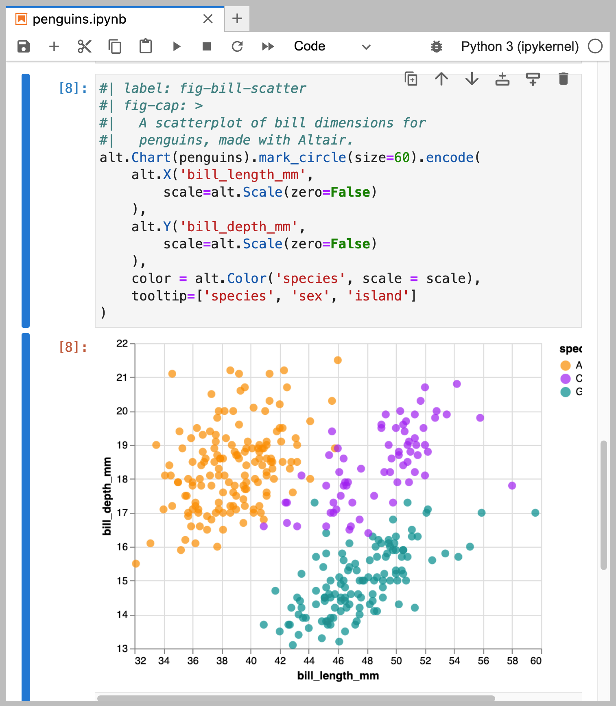
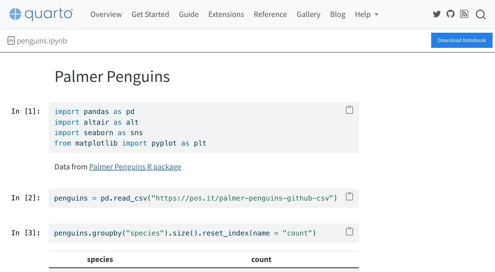
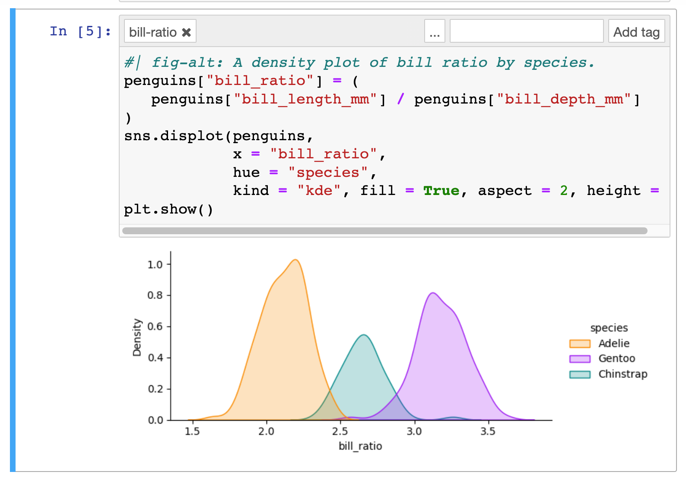

Embedding from Other Documents
Quarto 1.4 Feature
This feature is new in Quarto 1.4. Download the latest version of Quarto at https://quarto.org/docs/download/.
Overview
You can include the output of an another Quarto document (.qmd or .ipynb) with the embed shortcode. To embed the output of a code block or notebook cell, provide the path to document and an identifier for the block or cell. For example, this Jupyter notebook called penguins.ipynb has a cell labelled fig-bill-scatter:

You can use the following shortcode to embed the output of this cell:
{{< embed penguins.ipynb#fig-bill-scatter >}}This will embed the plot as follows:
A link to the source notebook is automatically provided beneath the plot. Following the link takes users to a rendered version of the notebook, allowing them to explore the notebook without having to download and run it locally. For example, clicking on the link to penguins.ipynb gets you to a page that looks like the following:

You can embed output to and from both Jupyter Notebooks (.ipynb) and Quarto documents (.qmd). In this article, we’ll refer to the source document generically as a notebook.
Beyond this basic usage, you can also:
Specify cells or blocks in multiple ways, see Specifying Cells.
Control the output using code cell options in the source notebook, including things like figure captions, figure layout, and code display, see Code Cell Options.
Include the code along with the output by adding an
echooption to the shortcode, see Embedding Code.Customize or exclude the link to the the source notebook, see Links to Source Notebooks.
Specifying Cells
The embed shortcode specifies source notebooks using a relative path followed by a cell or code block identifier (e.g. penguins.ipynb#fig-bill-scatter). If the identifier is omitted, all of the cells or code blocks in the notebook will be embedded in the document.
Quarto Documents
When the source is a Quarto document (.qmd), use the label of the code block as the identifer. For example, if the source document penguins.qmd contained the following code block:
penguins.qmd
```{r}
#| label: fig-size-scatter
ggplot(penguins, aes(body_mass_g, flipper_length_mm)) +
geom_point(aes(color = species)) +
scale_color_manual(values = colors) +
theme_minimal()
```You would embed the output of that block with:
{{< embed penguins.qmd#fig-size-scatter >}}Which results in the following output:

Jupyter Notebooks
When the source is a Jupyter Notebook, the identifier used to locate the proper cell follows these heuristics:
- Cell
id
First, the cell metadata will be checked for a matchingid. (Cell IDs are a newer feature of Jupyter Notebooks that are not yet well supported in Jupyter front ends, butidis checked first to allow for future compatibility as they become more common). - Label
If no cell with a matchingidis found, Quarto will use a cell that has alabelin the code metadata which matches the cell identifier. - Tags
If no cell has been found, Quarto will use a cell or cell(s) whose tag matches the cell identifier.
Cell Tags
For example, to embed the output of a cell that you have given the tag bill-ratio within Jupyter Lab:

You would use the following embed:
{{< embed penguins.ipynb#bill-ratio >}}Which results in the following output:

Code Cell Options
Code cell options from the source notebook are propagated to the document in which they are embedded. For instance, you may specify code cell options like fig-cap, fig-alt and layout-ncol, to control aspects of embedded figures. For example, this cell in penguins.ipynb specifies figure options including a caption, sub-caption, alt text and layout:
penguins.ipynb
#| label: fig-bill-marginal
#| fig-cap: "Marginal distributions of bill dimensions"
#| fig-subcap:
#| - "Gentoo penguins tend to have thinner bills,"
#| - "and Adelie penguins tend to have shorter bills."
#| fig-alt:
#| - "Density plot of bill depth by species."
#| - "Density plot of bill length by species."
#| layout-ncol: 2
sns.displot(penguins,
x = "bill_depth_mm",
hue = "species",
kind = "kde", fill = True, aspect = 2, height = 3)
plt.show()
sns.displot(penguins,
x = "bill_length_mm",
hue = "species",
kind = "kde", fill = True, aspect = 2, height = 3)
plt.show()When this cell is embedded:
{{< embed penguins.ipynb#fig-bill-marginal >}}The following output is produced:
Embedding Code
You may include the code from a cell or block along with the output by using the echo=true option to the embed shortcode. For example, to include the code and the plot from the cell labelled species-counts in penguins.ipynb the embed would be:
{{< embed penguins.ipynb#species-counts echo=true >}}The result in the document is both the code and output for the cell:
Like figure options, options for displaying the code will propagate from the source notebook. For example, to fold the code for this cell, you could add code-fold: true to the options for the species-counts cell:
penguins.ipynb
#| label: species-counts
#| code-fold: true
penguins.groupby("species").size().reset_index(name = "count")The options set in the YAML header for the document in which these cells are embedded will also control these code cells. For example, to fold all the code, including the code embedded from penguins.ipynb, you could add code-fold: true to the document YAML:
sample.qmd
title: Exploration of penguin characteristics
author: Norah Jones
toc: true
format:
html:
code-fold: trueLinks to Source Notebooks
When you embed the contents of notebooks in a Quarto document and render the document to HTML, Quarto will automatically include links to the source notebooks that provided the embedded content. These links will by default appear both inline below the embedded content, as well as below the table of contents. For example, the following document embeds content from the notebook penguins.ipynb. You can see the links in the rendered HTML document below:
Link Placement
You can control the placement of the links to source notebooks by specifying the option notebook-links in the document YAML with one of the following values:
true(default)-
Display links to source notebooks inline below the embedded content, and alongside the table of contents.
false-
Do not display any links to source notebooks.
inline-
Display only the links inline below the embedded content.
global-
Display only the links alongside the table of contents.
Notebook Views
By default, the link to the source notebook goes to an automatically generated HTML render of the notebook. This makes it easier for users to view the notebook contents without needing to download and run the notebook locally. This notebook view displays the contents of the notebook and includes a button to download the notebook. For example:
As an example, you can view the live previews for the penguins.ipynb notebook and penguins.qmd notebook used in this document.
View Options
You can control the behavior of notebook views using notebook-view. For each source notebook, you can provide a title and a url. The title will be used as the text of the any links to the source notebook and will also appear at the top of the rendered notebook view. The url, if provided, will be used as the href of any links to the source notebook. This is useful if you have deployed a copy of the source notebook to a site like Github, Google Colab, or Kaggle and would rather link to that instead.
For example:
notebook-view:
- notebook: penguins.ipynb
title: "Plots and Computations"
url: https://colab.research.google.com/drive/12GsIPQ644SI4vkEEHiZn-Qqfbr-bD1__will result in links to the source notebook like so:
To disable the notebook views, and instead link directly to the notebook (so the user may download the notebook with no intermediary view), set notebook-view to false.